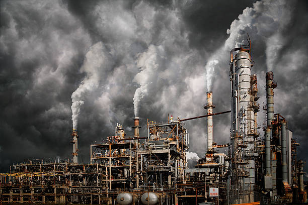
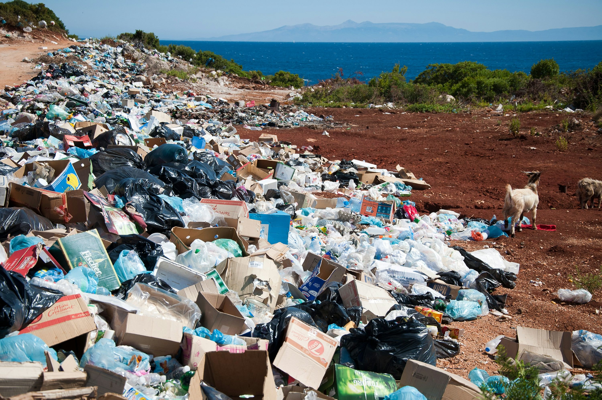

Environmetal pollutioin refers to the intorduction of harmful substances to our environment, that can cause effects on nature, animals, and human beings. It includes air, water, soil and noise polution. Pollution effects ecosystem, bio-diversity, health, and can cause climate change. It is mainly caused by human activities such as industrial waste, transportation, urbanization e.t.c, i can also cause problems like overcroud, traffic, and can affect our earth if not controlled properly in the present.
 Environmental pollution means making the natural world dirty or harmful. It happens when things like smoke, garbage, chemicals, or loud sounds get into the air, water, or land and make them unsafe. Most pollution is caused by people—factories, cars, burning trash, cutting down trees, and using too much plastic are common reasons. There are different kinds of pollution: air pollution makes the air dirty, water pollution harms lakes and rivers, and land pollution comes from throwing waste on the ground. Pollution is bad for animals, plants, and people. It can cause sickness, kill animals, and make the Earth hotter. To stop pollution, we can throw garbage in bins, use less plastic, ride bicycles, save water, and plant trees. Everyone must help protect the Earth by keeping it clean. A clean environment means a better, healthier life for us now and for future generations.